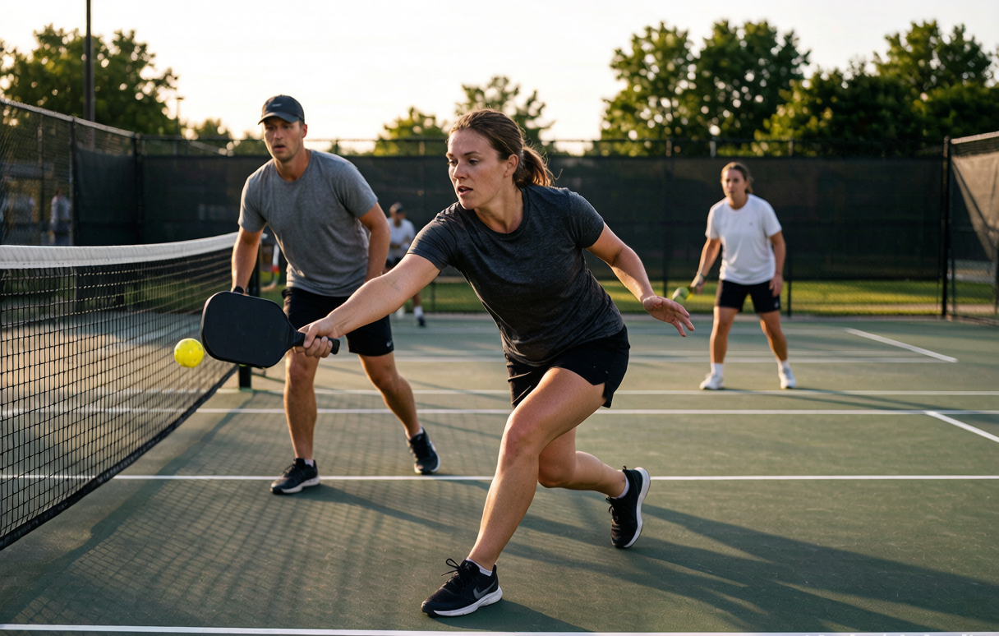

10 beginner pickleball mistakes (and the fixes that actually work)

Pickleball is easy to start and quietly hard to get good at. Most new players rally within minutes and then stall for weeks, repeating the same handful of habits. The good news is that nearly every common mistake has a fast fix, and you do not need to rebuild your technique to see results. Here are the ten we see most often, with the adjustment that actually moves the needle.
1. Standing too far back
New players hug the baseline because it feels safe. The problem is that pickleball is won at the net. Hang back and you hand your opponents every easy put-away. After the serve and return, your job is to work toward the non-volley line as soon as it is safe. Live at the line, and most of your scoring chances open up.
2. Swinging too hard
Tennis teaches you that power wins. Pickleball punishes it. The ball is slow and the court is small, so a big swing sends ball after ball sailing out or into the net. Shorten your stroke. Think "push and place," not "smash." Save the big swing for the rare ball that is high and close.
3. Faulting the serve
Two things trip up almost every newcomer. First, the serve must be underhand and contacted below the waist. Swing overhand and it is a fault. Second, the two-bounce rule: the ball has to bounce once on the receiving side and once on the serving side before anyone volleys. Beginners charge the net and volley the return before that second bounce, giving away free points. Learn the sequence once and a whole category of errors disappears.
4. Living in the kitchen
The non-volley zone is the most-violated rule among beginners. You cannot volley while standing in it, and your momentum cannot carry you in right after a volley either. The fix is simple: if a ball is going to land in the kitchen, let it bounce, then step in and play it. Only the volley is restricted. Train your feet to recognize that line and you stop donating points on technicalities. If "kitchen" and "non-volley zone" are new words, our beginner glossary defines them with the rest.
5. Skipping the third-shot drop
The serving team starts at a disadvantage: they are stuck back while the returners own the net. New players try to blast their way out and get crushed. The third-shot drop is the answer. It is a soft shot that arcs over the net and lands in the kitchen, buying the serving team time to move up. It is the single most useful advanced skill for escaping beginner level, and it is worth drilling on purpose instead of hoping it happens in a game.
6. The wrong grip
Most shots want a continental grip: hold the paddle like you are shaking hands with it. New players death-grip the handle or rest their off hand on top, both of which tie up the wrist. A relaxed, neutral grip keeps the paddle ready and your reactions faster. If your forearm is tired after a session, your grip is probably too tight.
7. No split step
Sprinting to the kitchen without resetting leaves you off-balance when the ball arrives. The split step is a small hop just before your opponent hits, landing with feet apart and paddle up. It squares you up and buys reaction time. It feels fussy until you miss it a few times, then it becomes automatic.
8. Forgetting to talk to your partner
Doubles falls apart without communication. Call who takes the middle ball ("mine," "yours"), and decide in advance how you cover lobs. Good teams sound noisy. Silent teams let balls drop between them. This is the cheapest improvement available and it costs nothing but a little volume.
9. Panicking in the transition zone
The area between the baseline and the kitchen line makes beginners nervous, so they either freeze at the back or sprint blindly forward. The better read is to watch your opponent's paddle: if their paddle tip is down, they have to lift the ball, which is your cue to move in. If the tip is up, they are ready to hit down, so hold your position. Move based on what they are doing, not where the ball happens to be.
10. Giving up on pop-ups
You hit a ball high, assume the point is over, and mentally check out. Don't. Take a quick shuffle step back, plant your feet, and drop your paddle low to defend. A surprising number of points end with someone putting a "dead" ball back over the net because the other side stopped trying.
The one idea to keep
If you remember nothing else, remember this: get to the net and stay there. The kitchen line is home base. Most of the mistakes above are really just versions of standing in the wrong place or swinging like the ball owes you something. Fix those and your win rate climbs faster than any new paddle would manage.
Speaking of paddles, the wrong one can quietly work against you while you learn. If you have not picked yet, our first paddle guide breaks down what actually matters, or the matcher will shortlist three in 30 seconds.
getrallypick may earn a commission from partner links. It never changes our recommendations. See our disclosure.